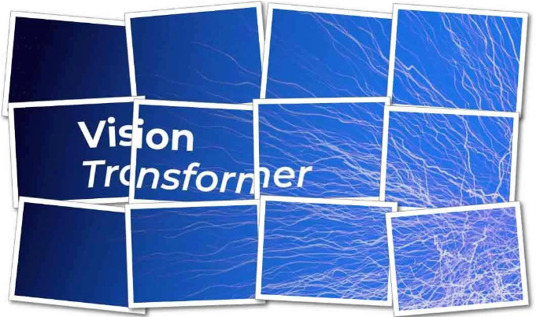
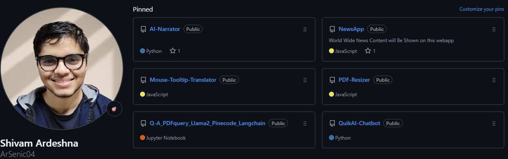
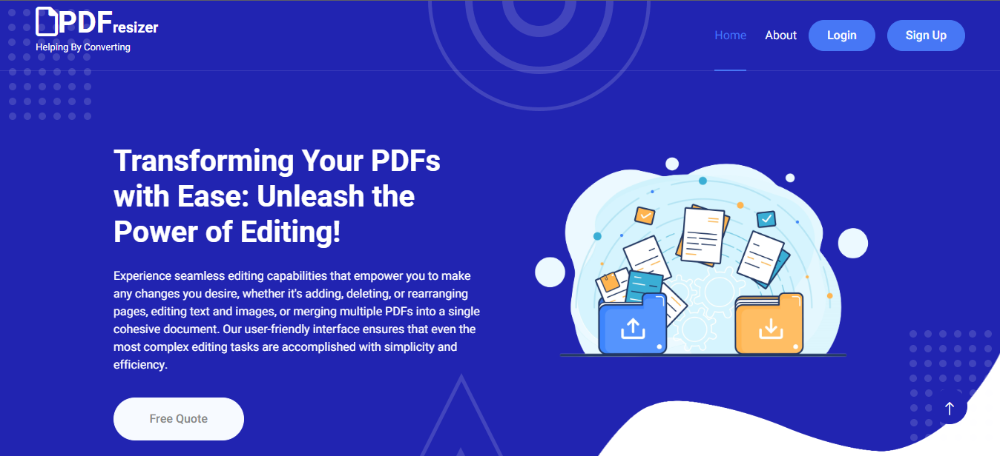
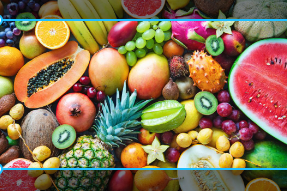

|
Shivam Ardeshna
"I possess a deep expertise in machine learning, driven by a passion for crafting intelligent
systems that intuitively comprehend and anticipate user behavior. My work centers around
developing sophisticated recommendation systems designed to elevate user experiences and
seamlessly adapt to the ever-evolving data landscape. I excel in harmonizing scientific rigor with
semantic comprehension, merging linguistic and visual insights to create robust multi-modal
strategies. Through meticulous analysis and innovative problem-solving, I turn complex challenges
into transformative, impactful solutions."
As an author for AI Advances and The Modern Scientist Publications, I've contributed
insightful articles [1] and [2] that delve into the
intricacies of state-of-the-art recommendation
systems and advanced vision transformers, showcasing their practical applications and transformative
impact on technology. In addition, I actively participate in Kaggle competitions, where I have
consistently achieved commendable rankings and made valuable contributions as a dataset creator,
further enhancing my expertise and supporting the data science community.I have deployed eight
models on Huggingface, each exemplifying diverse
machine learning applications. These models are
open-source, allowing anyone to leverage them for their own projects and research endeavors.
During my undergraduate studies at Charusat University, I had the privilege of collaborating with
distinguished faculties Prof.
Ronak Patel, Dr.
Deep Kothadiya and Dr.
Dhaval Bhoi on
research-driven projects. This experience
culminated in the
publication of a research paper that addressed data sparsity in recommendation systems, classified
news as either authentic or fabricated through a comparative analysis of various classifiers, and
extended similar methodologies to differentiate between real and AI-generated images.
I completed an SDE internship at Heliconia Solutions,
where I developed utility tools for file conversions.
Subsequently, I joined AGEVOLE
INNOVATION PVT. LTD. as a Machine Learning Engineer, where I
advanced ongoing projects and engineered a sophisticated news recommendation algorithm tailored to
diverse global audiences. Currently, I am undertaking an internship at Digital Hercules Innovation as an AI/ML Engineer, where I am working on cutting-edge machine learning models and contributing to the development of intelligent solutions.
|
|
Articles & Blogs 📜

Vision Transformers: Demystifying the Latest Breakthrough in Image Recognition
Published in The Modern
Scientist
This article offers an in-depth look at Vision Transformers, a cutting-edge approach
revolutionizing image recognition. It explores how these models enhance
recommendation systems by improving the accuracy of visual content analysis, leading
to more personalized and contextually relevant recommendations.
Seeing is Believing: How Recommendation Systems Are Learning to See
Published in AI Advances
This article explores the integration of computer vision into recommendation systems,
highlighting how visual data enhances user personalization. It delves into the
advancements in visual recognition and their impact on refining recommendations.
Projects 📂

PDFQuery using LangChain and Pinecode
Developed an advanced PDF querying system utilizing LLM, PineCode, Streamlit,
and
LangChain to enhance data retrieval capabilities. The system enables users to upload
PDF documents and engage in interactive, natural language-based queries. By
incorporating LLM for language comprehension and LangChain for optimized data
access, the project effectively accelerates response times. This innovation in PDF
content extraction and natural language processing exemplifies a novel approach to
efficient information retrieval, setting a new benchmark for PDF querying systems.
Mouse Tooltip Translator
Created a browser plugin for real-time translation, allowing users to
translate text
by hovering over content and selecting a language. The plugin, deployed on Chrome,
provides instant multilingual comprehension, enhancing the browsing experience by
eliminating language barriers and offering seamless, on-the-fly translations.
AI-Narrator
AI-Narrator is an innovative project that leverages LLM technology to provide
frame-by-frame visual narration from your camera feed. It can generate detailed,
real-time descriptions of any scene, adapting the narration to the voice of your
choice. Whether for accessibility, storytelling, or immersive experiences,
AI-Narrator offers a personalized and dynamic way to experience visual content
through natural, human-like speech.

File Convertor
As an intern at Heliconia, I collaborated on developing a highly efficient file
conversion system using Django and ReactJS. The system streamlines tasks
such as
text extraction and resizing, significantly enhancing user flexibility. Built on a
robust and scalable architecture, it facilitates the seamless integration of new
features, ensuring adaptability to evolving user requirements. This project
highlights my capability to deliver sophisticated, user-centric solutions that are
poised for future growth and scalability.
Multimodal-VideoRAG
This project leverages Retrieval-Augmented Generation (RAG) to create an intelligent video analysis system that processes multiple data types—text, audio, and visuals—to deliver context-aware responses.
Combining multimodal inputs enhances video comprehension and provides detailed, relevant insights.
Ideal for applications like video summaries, Q&A, and content recommendations, this project makes video data more accessible and interactive.
NewsWeb(NewZing)
Developed a dynamic news website using Flask, API integration, and ReactJS,
designed
to provide real-time updates across various sectors. The platform features a
responsive design for seamless accessibility on all devices, complemented by an
intuitive interface that enhances navigation and delivers comprehensive news
listings and full articles directly through APIs. This project underscores my
ability to create an engaging and user-friendly news platform that keeps audiences
informed and connected.
StratifyAI
Developed StratifyAI, a comprehensive company financial analyzer that delivers detailed information about companies,
including real-time news and market trends. Designed to empower users with strategic insights, the platform integrates advanced data analytics to provide an all-encompassing view of a company's financial health and market position.
StratifyAI features an intuitive user interface and dynamic visualization tools, enhancing user experience and facilitating informed decision-making.
This project showcases my AI/ML engineering expertise and dedication to building impactful financial intelligence solutions.
Datasets 📚
Image Forensic_Real & Fake images
The "Real & Fake Images Dataset - For Image Forensics" offers a comprehensive
collection of images categorized into real and fake across training, testing, and
validation sets. It serves as a vital resource for developing and evaluating
algorithms for detecting image manipulation, enhancing models, and exploring image
forensics techniques. This dataset is crucial for advancing the detection of
deepfakes and other digital deceptions.
Uploaded on Kaggle

Image Classification for Fruits
The dataset includes images of apples, oranges, and bananas, categorized by freshness
(fresh and rotten) and partitioned into training, testing, and validation sets. It
supports supervised learning tasks like classification and object detection, aiding
in robust model development for fruit quality assessment.
Uploaded on Kaggle
Comprehensive Movie Reviews and Ratings Dataset with High-Resolution Poster Images
The Movie Sentiment and Rating Images Dataset contains approximately 33,000
high-resolution movie posters with sentiment labels and user ratings. It supports
sentiment analysis, rating prediction, and content-based recommendation system
development, offering valuable insights for deep learning and computer vision
research.
Uploaded on Kaggle
Publications 📖
Improving item based collaborative with Vision Transformers to address data sparsity
issue
This paper presents a novel approach to enhancing item-based collaborative filtering
by integrating Vision Transformers to tackle data sparsity challenges. The proposed
method leverages visual data to enrich user-item interactions, resulting in improved
recommendation accuracy. Accepted at the 9th International Conference on
Information
and Communication Technology for Competitive Strategies (ICTCS-2024).
Evaluating the Efficacy of Diverse Classifiers in Fake News Detection: A Comparative
Study
This paper offers a comprehensive comparative analysis of various classifiers for
detecting fake news. It examines the effectiveness of different machine learning
models in identifying deceptive content, aiming to enhance the reliability of fake
news detection systems. Accepted at the 9th International Conference on
Information
and Communication Technology for Competitive Strategies (ICTCS-2024).
Enhancing Deep Fake Image Generation and Detection through Transfer Learning
This study explores the use of transfer learning techniques to improve both the
generation and detection of deep fake images. It presents novel methods for
leveraging pre-trained models to enhance the accuracy and efficiency of identifying
and creating deep fake content. Accepted in 2nd International Conference on
Artificial Intelligence, Computing Technologies, Internet of Things (IoT) and Data Analytics(AICTA-2024).
|
|

{kind=link}